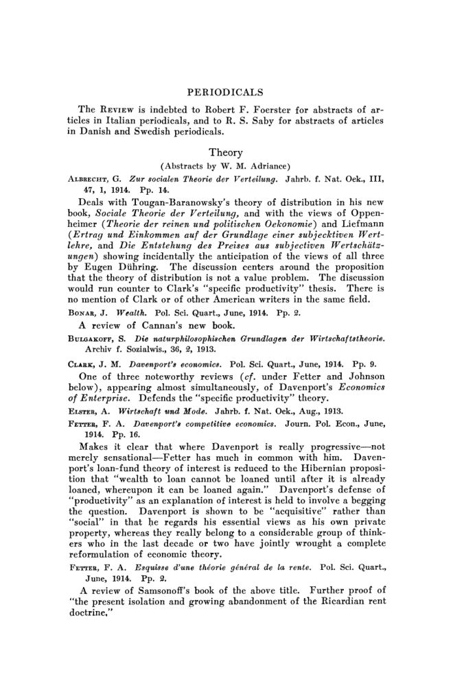

Setembro de 1914: títulos ferroviários, lucros ocultos e o Panamá
Leitura: 11 min
Ripley mostra que a diluição do capital destrói o serviço antes das tarifas, Clark mede o retorno do investidor com preços em alta, Hutchinson calcula as rotas do Panamá e Mulvey testa as leis sobre títulos.


Nos cinco anos que antecederam a concordata, a Metropolitan Street Railway, de Nova York, não comprou um único bonde novo. Não podia: todos os recursos tinham se esgotado. Milhões de dólares se perderam na gestão da companhia, mas a passagem continuou a cinco centavos o tempo todo. Onde o público perdeu, escreve William Z. Ripley, foi no colapso do serviço.
O exemplo abre o número de setembro de 1914 da American Economic Review, e o tema atravessa a edição: como financiar e regular empresas que prestam serviço público. Ripley, da Harvard University, examina o controle estatal das emissões de títulos ferroviários; J. Maurice Clark, do Amherst College, pergunta o que a inflação faz com o retorno justo do capital regulado; Lincoln Hutchinson, da University of California, estima o custo das viagens pelo canal do Panamá e pelas rotas concorrentes; e Thomas Mulvey, de Ottawa, discute se uma lei pode certificar a qualidade de um título. Seguem mais de trinta resenhas, listas de lançamentos, documentos, resumos de periódicos e notas.
O que a diluição do capital realmente custa ao público?
William Z. Ripley (Harvard University) · “Public Regulation of Railroad Issues” · pp. 541–564
Ripley parte de um equívoco que via na maior parte das leis contra a diluição do capital: a ideia de que o excesso de títulos importa sobretudo porque leva a tarifas altas. Para ele, o argumento mais forte é outro. Uma empresa supercapitalizada paga juros e dividendos desviando dinheiro que deveria ir para manutenção e melhorias, e não consegue emitir títulos quando precisa, porque seus papéis estão muito abaixo do par. Cita a Alton, cujo caixa foi esvaziado, e o colapso da New Haven em 1912 e 1913, com atrasos e acidentes.
Há duas políticas possíveis. A modesta é a publicidade, defendida pela Railroad Securities Commission federal de 1910, que temia dar ao investidor a aparência de uma garantia oficial. A radical é regular o montante e a natureza de cada emissão. Ripley cita a comissão, que comparava a regulação de títulos à lei de alimentos puros.
“A lei de alimentos puros permite ao homem saber o que está comprando.” (“The pure food law enables a man to know what he is buying.”)
Desde 1908, treze estados, além de Massachusetts e do Texas, passaram a regular emissões. Ripley elogia Nova York, que separou rigorosamente capital e receita e recusou capitalizar compras a preços exorbitantes. Massachusetts mostrou que a restrição funciona: em 1912, os bondes de Connecticut tinham capitalização média de US$ 115.810 por milha, quase o dobro da de Massachusetts. Mas o rigor excessivo sobre o preço de emissão secou o capital depois de 1903, e a lei texana de 1893, ao tentar espremer a água de uma vez, penalizou as melhorias. A conclusão é que só a União, pela Interstate Commerce Commission, poderia unificar o controle: seis comissões estaduais participavam ao mesmo tempo da reorganização da Wabash.
Quanto vale um retorno de 5% quando os preços sobem?
J. Maurice Clark (Amherst College) · “Some Neglected Phases of Rate Regulation” · pp. 565–574
Clark faz uma conta simples. Uma renda de 5%, corroída por uma perda anual de 2% no poder de compra do principal, não vale mais que 3% numa época de preços estáveis, ou 1% quando os preços caem 2% ao ano. A relação entre preços e juros era conhecida, diz, mas não aparecia nos negócios nem na regulação.
Os juros altos dos títulos de boa qualidade durante a depressão recente seriam uma compensação tardia e parcial pela queda do poder de compra do dólar iniciada em 1896. As ferrovias reagiram emitindo notas de curto prazo, à espera de refinanciar mais barato, aposta arriscada se a moeda continuasse a perder valor. Clark nota que árbitros de disputas salariais já ajustavam salários ao custo de vida, mas as comissões não faziam o equivalente para o investidor.
Clark vai além. Se houvesse um padrão de justiça para o investidor equivalente ao padrão de vida do assalariado, numa era de preços subindo mais de 3% ao ano ele deveria receber 3 pontos a mais do que com preços estáveis. Na prática, o retorno justo é tomado da taxa de mercado, e Clark teme que o padrão judicial se torne rígido e ignore até os movimentos longos de preços.
A segunda parte trata do excedente reinvestido. As ferrovias fizeram grandes melhorias com lucros, muitas vezes lançadas como despesa operacional, e alegavam dividendos baixos para resistir a cortes de tarifas, enquanto pretendiam cobrar dividendos futuros sobre essas melhorias. Em 1911, a Interstate Commerce Commission recusou à Burlington dividendos sobre os US$ 530 milhões que ela reivindicava como valor presente. Clark conclui que, se as melhorias derem direito a dividendos, devem contar como renda quando feitas e ser fiscalizadas com o mesmo cuidado aplicado às emissões de títulos.
O canal do Panamá vai mudar as rotas dos navios?
Lincoln Hutchinson (University of California) · “Voyage Costs via Panama and Other Routes” · pp. 575–587
Hutchinson quer estimar o que o canal oferecerá à navegação mercante, questão decisiva para os comerciantes e para a administração do canal, cuja receita depende de atrair navios de outras rotas. Entre os muitos fatores, seleciona distância, custo do combustível e pedágio, os que pesam para o navio vagabundo, que viaja para onde houver carga e transporta a maior parte do comércio internacional. Deixa de fora correio, passageiros, subsídios e carga de escala.
O método calcula a tarifa de frete que cobre o custo anual e o lucro normal em cada rota, a que ele chama tarifa de custo do serviço. Num exemplo de Liverpool a Batávia, a viagem por Suez é mais cara que pelo Cabo da Boa Esperança, mas o navio faz mais viagens por ano e reserva menos espaço para carvão; a tarifa necessária cai para US$ 5,62 por tonelada, contra US$ 6,89 pelo Cabo, e Suez é preferido.
Aplicado a Nova York e Liverpool e a dezenove portos do Pacífico, o cálculo indica que a rota de Magalhães seria abandonada, que o Panamá serviria a toda a costa oeste das Américas e que Suez continuaria preferido de Liverpool para a Ásia. Com o pedágio fixado, a vantagem de Nova York sobre Liverpool na costa americana do Pacífico iria de 42%, para Seattle, a 81%, para Guayaquil. Hutchinson avisa que as cifras servem só para comparação. Pergunta, por fim, se não valeria abrir o canal sem pedágio: a receita máxima nos primeiros anos foi estimada em US$ 12 milhões anuais, e um aumento de US$ 150 milhões no comércio, com lucro de 10%, compensaria a perda.
Uma lei pode certificar a qualidade de um título?
Thomas Mulvey (Ottawa) · “Certified Securities” · pp. 588–601
Mulvey parte da lei de alimentos puros e pergunta se ações e títulos podem ser pasteurizados por lei. Duvida. O alimento pode ser analisado; o título é um contrato, formado pela lei, pelo estatuto e pelo certificado, e por trás dele estão motivos e intenções que nenhum tubo de ensaio examina. Lembra a frase de um juiz antigo.
“Os pensamentos de um homem não são julgáveis.” (“the thoughts of a man are not triable.”)
O autor percorre as leis americanas. A constituição do Arizona declara nulo todo aumento fictício de ações ou dívidas; em vários estados, bens recebidos em troca de ações devem valer o preço de mercado, o valor em dinheiro ou o valor real, distinções que os tribunais não conseguiram tornar coerentes. Nova York criou em 1912 as ações sem valor nominal, ideia lançada na associação de advogados do estado em 1892; Mulvey acha que ela não protege as novas emissões, por não exigir publicidade das transações anteriores.
Mulvey cita ainda o caso do Farmers Bank, no Canadá. O certificado oficial para operar foi obtido com informações enganosas e, depois da quebra, o governo propôs contribuir com cerca de US$ 1,3 milhão para os depositantes; o projeto passou na Câmara dos Comuns e foi rejeitado no Senado.
Para Mulvey, a lei do Kansas é impraticável, com uma exceção eficaz: a licença exigida dos vendedores ambulantes de títulos. O modelo que prefere é o inglês, consolidado em 1908 depois de fracassos sucessivos: prospecto com todos os contratos, comissões e interesses dos diretores, subscrição mínima a ser atingida em quarenta dias e assembleia obrigatória dos acionistas. A diluição do capital, se feita às claras, não seria em si um mal. O remédio é a publicidade, e o investidor que não investiga não tem de que se queixar.
O que mais há na edição?
Entre as resenhas, Wesley C. Mitchell trata de The Economics of Enterprise, de Herbert Joseph Davenport, e do estudo estatístico de James Dysart Magee sobre movimentos de preços; Henry C. Emery, da Theory of Social Revolutions, de Brooks Adams, e das crises industriais inglesas de Tougan-Baranowsky; Clive Day, da história do comércio de grãos na França de Abbott Payson Usher; e Allyn A. Young, de um ensaio de Luigi Einaudi sobre a renda tributável. A seção de documentos traz Otto Wilson sobre a Chamber of Commerce of the United States, com mais de 580 organizações filiadas, W. F. Gephart sobre a companhia de águas de St. Louis e Robert M. Haig sobre o imposto sobre o incremento não ganho em Alberta. As notas anunciam a reunião anual em Princeton e a de 1915, no verão, em San Francisco.
Na minha leitura
Na minha leitura, os quatro artigos tratam da mesma pergunta por lados diferentes: que informação o público precisa para que o capital privado sirva a fins públicos. Ripley e Mulvey divergem sobre o remédio, controle prévio de cada emissão ou publicidade completa, mas concordam que o problema é a assimetria entre quem emite e quem compra. Clark acrescenta que mesmo a informação contábil correta engana se o retorno for medido em dólares nominais quando o dólar perde valor.
Hutchinson oferece o exemplo mais limpo de método. Em vez de prever fretes, constrói uma tarifa de custo do serviço com hipóteses explícitas e a usa só para comparar rotas, admitindo que os erros das médias se anulam quando aplicados igualmente a todas. É a lógica da estática comparativa aplicada a uma decisão de política pública, o pedágio do canal.
Glossário
- Diluição do capital (stock watering)
- emissão de ações ou títulos acima do capital efetivamente investido.
- Concordata (receivership)
- administração judicial de uma empresa insolvente, nos Estados Unidos, por um interventor nomeado pelo tribunal.
- Lei Blue Sky
- lei estadual americana que exige registro ou licença para a venda de títulos, para proteger investidores contra fraudes.
- Navio vagabundo (tramp)
- cargueiro sem rota nem horário fixos, que vai para onde houver carga.
- Tonelada líquida de registro
- medida do volume útil de um navio, base para o cálculo de pedágios.
- Melhorias (betterments)
- investimentos que ampliam ou melhoram uma instalação, distintos da simples reposição.
- Padrão tabular
- pagamento de dívidas corrigido por um índice de preços, para preservar o poder de compra.
- Subscrição mínima
- na lei inglesa, capital mínimo que precisa ser subscrito e pago antes de a companhia começar a operar.
Artigos (4)
- Public Regulation of Railroad Issues — William Z. Ripley (Harvard University) (pp. 541–564) · resenha acima · comentário completo · JSTOR
- Some Neglected Phases of Rate Regulation — J. Maurice Clark (Amherst College) (pp. 565–574) · resenha acima · comentário completo · JSTOR
- Voyage Costs via Panama and Other Routes — Lincoln Hutchinson (University of California) (pp. 575–587) · resenha acima · JSTOR
- Certified Securities — Thomas Mulvey (Ottawa) (pp. 588–601) · resenha acima · JSTOR
Resenhas (34)
- Herbert Joseph Davenport, The Economics of Enterprise — Wesley C. Mitchell (pp. 602–605). Resenha do tratado de teoria dos preços de Davenport. JSTOR
- Brooks Adams, The Theory of Social Revolutions — Henry C. Emery (pp. 605–607). Resenha de um ensaio sobre capital, lei e revolução social. JSTOR
- Walton H. Hamilton, Readings in Current Economic Problems — Frank A. Fetter (pp. 608). Resenha de uma coletânea de leituras para o ensino de economia. JSTOR
- Clarence Gilbert Hoag, A Theory of Interest — D. R. Scott (pp. 608–610). Resenha de um livro de teoria dos juros. JSTOR
- Edwin Cannan, Wealth: A Brief Explanation of the Causes of Economic Welfare — J. E. Le Rossignol (pp. 610–611). Resenha de um manual introdutório de Cannan. JSTOR
- Vários autores, Property: Its Duties and Rights — Richard T. Ely (pp. 611–614). Resenha de ensaios sobre a propriedade, com introdução do bispo de Oxford. JSTOR
- N. G. Pierson, Principles of Economics, vol. II — Walton H. Hamilton (pp. 614–617). Resenha da tradução inglesa do segundo volume do tratado de Pierson. JSTOR
- Henry Demarest Lloyd, 1847–1903: A Biography — Maurice H. Robinson (pp. 618–620). Resenha de uma biografia em dois volumes de Henry Demarest Lloyd. JSTOR
- Hubert Hall (org.), A Select Bibliography for the Study, Sources and Literature of English Mediaeval Economic History — Clive Day (pp. 620–623). Resenha de uma bibliografia da história econômica medieval inglesa preparada na London School of Economics. JSTOR
- Abbott Payson Usher, The History of the Grain Trade in France, 1400–1710 — Clive Day (pp. 623–625). Resenha de um estudo institucional do comércio de grãos na França. JSTOR
- Angel Marvaud, La Question Sociale en Espagne; L'Espagne au XXe Siècle — Katharine Coman (pp. 625–627). Resenha de dois livros sobre a economia e a questão social na Espanha. JSTOR
- Henri Andrillon, L'Expansion de l'Allemagne — C. H. Levermore (pp. 628–630). Resenha de um livro francês sobre a expansão econômica alemã. JSTOR
- G. L. H. Lloyd, The Cutlery Trades — Melvin T. Copeland (pp. 638–640). Resenha de um estudo da evolução da indústria de cutelaria de Sheffield. JSTOR
- W. R. Lawson, British Railways: A Financial and Commercial Survey — Ernest Ritson Dewsnup (pp. 640–642). Resenha de um levantamento financeiro e comercial das ferrovias britânicas. JSTOR
- Michel Tougan-Baranowsky, Les Crises Industrielles en Angleterre — Henry C. Emery (pp. 643–646). Resenha da nova edição francesa do estudo das crises industriais inglesas. JSTOR
- Benjamin A. Franklin, Cost Reports for Executives as a Means of Plant Control — J. E. Sterrett (pp. 646–648). Resenha de um livro sobre relatórios de custos para a gestão de fábricas. JSTOR
- Lewis H. Haney, Business Organization and Combination — Abraham Berglund (pp. 651–652). Resenha de um livro sobre organização e combinação de empresas. JSTOR
- Robert H. Whitten, Regulation of Public Service Companies in Great Britain — James E. Allison (pp. 652–653). Resenha de um estudo da regulação de serviços públicos britânicos. JSTOR
- George R. Carter, The Tendency towards Industrial Combination; M. E. Hirst, The Story of Trusts — O. W. Knauth (pp. 654–655). Resenha de dois livros britânicos sobre combinações e trustes. JSTOR
- Compère-Morel, La Concentration Capitaliste en France — William S. Stevens (pp. 655–656). Resenha de um folheto socialista sobre a concentração do capital na França. JSTOR
- Nathaniel Ruggles Whitney, Jurisdiction in American Building-Trades Unions — George Gorham Groat (pp. 658–659). Resenha de um estudo das disputas de jurisdição entre sindicatos da construção. JSTOR
- Frederic Keeling, Child Labour in the United Kingdom — Emilie Louise Wells (pp. 659–661). Resenha de um relatório nacional sobre o trabalho infantil britânico. JSTOR
- R. Kuczynski, Arbeitslohn und Arbeitszeit in Europa und Amerika 1870–1909 — Eugene B. Patton (pp. 661–663). Resenha de um estudo comparado de salários e jornadas na Europa e na América. JSTOR
- James Dysart Magee, A Statistical Study of Price Movements — Wesley C. Mitchell (pp. 666–667). Resenha de uma tese estatística sobre movimentos de preços. JSTOR
- John A. Hobson, Gold, Prices and Wages — Walter M. Adriance (pp. 667–669). Resenha de um livro crítico da teoria quantitativa da moeda. JSTOR
- Sir David Barbour, The Influence of the Gold Supply on Prices and Profits — E. M. Patterson (pp. 669–671). Resenha de um livro sobre a oferta de ouro, preços e lucros. JSTOR
- Final Report of the Royal Commission on Indian Finance and Currency — Harold L. Reed (pp. 671–672). Resenha do relatório final da comissão real sobre as finanças e a moeda da Índia. JSTOR
- The Financial History of New York State — M. H. Hunter (pp. 675–677). Resenha de uma história financeira do estado de Nova York, da série da Columbia University. JSTOR
- A. Landry e B. Nogaro, La Crise des Finances Publiques en France, en Angleterre, en Allemagne — Fred Fairchild (pp. 677–678). Resenha de um estudo comparado das finanças públicas de três países. JSTOR
- Luigi Einaudi, Intorno al concetto di reddito imponibile e di un sistema d'imposte sul reddito consumato — Allyn A. Young (pp. 679–680). Resenha de um ensaio sobre o conceito de renda tributável e o imposto sobre a renda consumida. JSTOR
- John Daniels, In Freedom's Birthplace: A Study of the Boston Negroes — Edwin S. Todd (pp. 685–687). Resenha de um estudo sobre a população negra de Boston. JSTOR
- Stanley C. Johnson, A History of Emigration from the United Kingdom to North America — Walter E. Clark (pp. 687–688). Resenha de uma história da emigração britânica para a América do Norte. JSTOR
- Housing Problems in America; Housing and Town Planning — James Ford (pp. 689–691). Resenha das atas da segunda conferência nacional de habitação e de um volume dos Annals sobre habitação e urbanismo. JSTOR
- Dufour, Le Syndicalisme et la Prochaine Révolution — Louis Levine (pp. 696–697). Resenha de um livro francês sobre o sindicalismo revolucionário. JSTOR
Novos livros (17)
- New Books (teoria e sua história) — redação (pp. 617–618). Lista de lançamentos de teoria e história do pensamento. JSTOR
- New Books (história econômica e geografia) — redação (pp. 630–635). Lista de lançamentos de história econômica e geografia. JSTOR
- New Books (agricultura, mineração, florestas e pesca) — redação (pp. 635–638). Lista de lançamentos sobre agricultura e recursos naturais. JSTOR
- New Books (indústrias manufatureiras) — redação (pp. 640). Lista de lançamentos sobre a indústria. JSTOR
- New Books (transporte e comunicações) — redação (pp. 642–643). Lista de lançamentos sobre transportes. JSTOR
- New Books (comércio e crises comerciais) — redação (pp. 646). Lista de lançamentos sobre comércio. JSTOR
- New Books (contabilidade, investimentos e bolsas) — redação (pp. 648–650). Lista de lançamentos de contabilidade e finanças. JSTOR
- New Books (capital e organização capitalista) — redação (pp. 656–658). Lista de lançamentos sobre capital e corporações. JSTOR
- New Books (trabalho e organizações trabalhistas) — redação (pp. 663–666). Lista de lançamentos sobre trabalho. JSTOR
- New Books (moeda, preços, crédito e bancos) — redação (pp. 672–675). Lista de lançamentos sobre moeda e bancos. JSTOR
- New Books (finanças públicas, tributação e tarifa) — redação (pp. 680–685). Lista de lançamentos sobre finanças públicas. JSTOR
- New Books (população e migração) — redação (pp. 689). Lista de lançamentos sobre população e migração. JSTOR
- New Books (problemas sociais e reformas) — redação (pp. 691–694). Lista de lançamentos sobre problemas sociais. JSTOR
- New Books (seguros e pensões) — redação (pp. 694–695). Lista de lançamentos sobre seguros e pensões. JSTOR
- New Books (pauperismo e caridade) — redação (pp. 695). Lista de lançamentos sobre assistência. JSTOR
- New Books (socialismo e cooperativas) — redação (pp. 697–699). Lista de lançamentos sobre socialismo e cooperação. JSTOR
- New Books (estatística e seus métodos) — redação (pp. 699–700). Lista de lançamentos de estatística. JSTOR
Documentos, periódicos e notas (3)
- Documents, Reports, and Legislation — Otto Wilson, W. F. Gephart, Robert M. Haig, Walter E. Weyl e outros (pp. 701–723). Notas sobre a Chamber of Commerce of the United States, as águas de St. Louis, o imposto sobre o incremento não ganho em Alberta, o poder estadual sobre tarifas de seguros e a imigração em Massachusetts. JSTOR
- Periodicals — redação e colaboradores (pp. 724–761). Resumos de artigos de periódicos, por área. JSTOR
- Notes — redação (pp. 762–770). Notícias da associação e da profissão. JSTOR
Fontes
- Public Regulation of Railroad Issues (pp. 541–564). JSTOR · Internet Archive (PDF)
- Some Neglected Phases of Rate Regulation (pp. 565–574). JSTOR · Internet Archive (PDF)
- Voyage Costs via Panama and Other Routes (pp. 575–587). JSTOR · Internet Archive (PDF)
- Certified Securities (pp. 588–601). JSTOR · Internet Archive (PDF)
- [untitled] The American Economic Review, (1914-09-01), pages 602-605 (pp. 602–605). JSTOR · Internet Archive (PDF)
- [untitled] The American Economic Review, (1914-09-01), pages 605-607 (pp. 605–607). JSTOR · Internet Archive (PDF)
- [untitled] The American Economic Review (1914-09-01), page 608 (pp. 608). JSTOR · Internet Archive (PDF)
- [untitled] The American Economic Review, (1914-09-01), pages 608-610 (pp. 608–610). JSTOR · Internet Archive (PDF)
- [untitled] The American Economic Review, (1914-09-01), pages 610-611 (pp. 610–611). JSTOR · Internet Archive (PDF)
- [untitled] The American Economic Review, (1914-09-01), pages 611-614 (pp. 611–614). JSTOR · Internet Archive (PDF)
- [untitled] The American Economic Review, (1914-09-01), pages 614-617 (pp. 614–617). JSTOR · Internet Archive (PDF)
- New Books (pp. 617–618). JSTOR · Internet Archive (PDF)
- [untitled] The American Economic Review, (1914-09-01), pages 618-620 (pp. 618–620). JSTOR · Internet Archive (PDF)
- [untitled] The American Economic Review, (1914-09-01), pages 620-623 (pp. 620–623). JSTOR · Internet Archive (PDF)
- [untitled] The American Economic Review, (1914-09-01), pages 623-625 (pp. 623–625). JSTOR · Internet Archive (PDF)
- [untitled] The American Economic Review, (1914-09-01), pages 625-627 (pp. 625–627). JSTOR · Internet Archive (PDF)
- [untitled] The American Economic Review, (1914-09-01), pages 628-630 (pp. 628–630). JSTOR · Internet Archive (PDF)
- New Books (pp. 630–635). JSTOR · Internet Archive (PDF)
- New Books (pp. 635–638). JSTOR · Internet Archive (PDF)
- [untitled] The American Economic Review, (1914-09-01), pages 638-640 (pp. 638–640). JSTOR · Internet Archive (PDF)
- New Books (pp. 640). JSTOR · Internet Archive (PDF)
- [untitled] The American Economic Review, (1914-09-01), pages 640-642 (pp. 640–642). JSTOR · Internet Archive (PDF)
- New Books (pp. 642–643). JSTOR · Internet Archive (PDF)
- [untitled] The American Economic Review, (1914-09-01), pages 643-646 (pp. 643–646). JSTOR · Internet Archive (PDF)
- New Books (pp. 646). JSTOR · Internet Archive (PDF)
- [untitled] The American Economic Review, (1914-09-01), pages 646-648 (pp. 646–648). JSTOR · Internet Archive (PDF)
- New Books (pp. 648–650). JSTOR · Internet Archive (PDF)
- [untitled] The American Economic Review, (1914-09-01), pages 651-652 (pp. 651–652). JSTOR · Internet Archive (PDF)
- [untitled] The American Economic Review, (1914-09-01), pages 652-653 (pp. 652–653). JSTOR · Internet Archive (PDF)
- [untitled] The American Economic Review, (1914-09-01), pages 654-655 (pp. 654–655). JSTOR · Internet Archive (PDF)
- [untitled] The American Economic Review, (1914-09-01), pages 655-656 (pp. 655–656). JSTOR · Internet Archive (PDF)
- New Books (pp. 656–658). JSTOR · Internet Archive (PDF)
- [untitled] The American Economic Review, (1914-09-01), pages 658-659 (pp. 658–659). JSTOR · Internet Archive (PDF)
- [untitled] The American Economic Review, (1914-09-01), pages 659-661 (pp. 659–661). JSTOR · Internet Archive (PDF)
- [untitled] The American Economic Review, (1914-09-01), pages 661-663 (pp. 661–663). JSTOR · Internet Archive (PDF)
- New Books (pp. 663–666). JSTOR · Internet Archive (PDF)
- [untitled] The American Economic Review, (1914-09-01), pages 666-667 (pp. 666–667). JSTOR · Internet Archive (PDF)
- [untitled] The American Economic Review, (1914-09-01), pages 667-669 (pp. 667–669). JSTOR · Internet Archive (PDF)
- [untitled] The American Economic Review, (1914-09-01), pages 669-671 (pp. 669–671). JSTOR · Internet Archive (PDF)
- [untitled] The American Economic Review, (1914-09-01), pages 671-672 (pp. 671–672). JSTOR · Internet Archive (PDF)
- New Books (pp. 672–675). JSTOR · Internet Archive (PDF)
- [untitled] The American Economic Review, (1914-09-01), pages 675-677 (pp. 675–677). JSTOR · Internet Archive (PDF)
- [untitled] The American Economic Review, (1914-09-01), pages 677-678 (pp. 677–678). JSTOR · Internet Archive (PDF)
- [untitled] The American Economic Review, (1914-09-01), pages 679-680 (pp. 679–680). JSTOR · Internet Archive (PDF)
- New Books (pp. 680–685). JSTOR · Internet Archive (PDF)
- [untitled] The American Economic Review, (1914-09-01), pages 685-687 (pp. 685–687). JSTOR · Internet Archive (PDF)
- [untitled] The American Economic Review, (1914-09-01), pages 687-688 (pp. 687–688). JSTOR · Internet Archive (PDF)
- New Books (pp. 689). JSTOR · Internet Archive (PDF)
- [untitled] The American Economic Review, (1914-09-01), pages 689-691 (pp. 689–691). JSTOR · Internet Archive (PDF)
- New Books (pp. 691–694). JSTOR · Internet Archive (PDF)
- New Books (pp. 694–695). JSTOR · Internet Archive (PDF)
- New Books (pp. 695). JSTOR · Internet Archive (PDF)
- [untitled] The American Economic Review, (1914-09-01), pages 696-697 (pp. 696–697). JSTOR · Internet Archive (PDF)
- New Books (pp. 697–699). JSTOR · Internet Archive (PDF)
- New Books (pp. 699–700). JSTOR · Internet Archive (PDF)
- Documents, Reports, and Legislation (pp. 701–723). JSTOR · Internet Archive (PDF)
- Periodicals (pp. 724–761). JSTOR · Internet Archive (PDF)
- Notes (pp. 762–770). JSTOR · Internet Archive (PDF)
- Sumário da edição no JSTOR: The American Economic Review, vol. 4, nº 3.
Documento em domínio público (EUA, publicado antes de 1931), via JSTOR Early Journal Content e Internet Archive. Resumo e comentário do autor deste site, sem afiliação com a American Economic Association. Encontrou um erro? Escreva: a correção é publicada no próprio texto, com data.
← Nº 130 · Junho de 1914: uma greve geral e o monopólio alemão do petróleo Nº 132 · Manual de 1914: a associação ganha um mapa dos seus sócios →